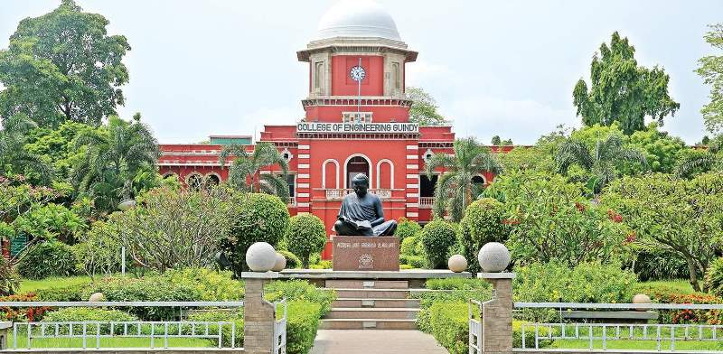
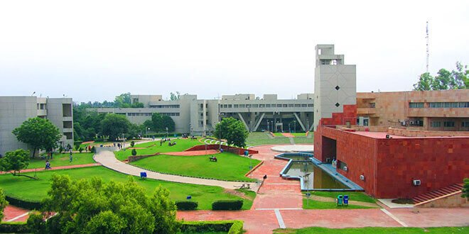

State universities are public universities run by the state government of each of the states and territories of India, and are usually established by a local legislative assembly act. The University Grants Commission (UGC), draws its power from the University Grants Commission Act, 1956. In addition, 15 Professional Councils are established, controlling different aspects of accreditation and coordination. The UGC publishes and regularly updates the lists of state universities. As of 4 March 2021, the UGC lists 443 state universities. The oldest establishment date listed by the UGC is 1857, shared by the University of Calcutta, the University of Madras and the University of Mumbai.
Section 12 (B) of the UGC Act of 1956 also grants the UGC the right to "allocate and disburse, out of the Fund of the Commission, grants to Universities..." As such, the UGC categorizes state universities as either "declared fit to receive Central/UGC assistance under Section 12 (B) of the UGC Act–1956", or not, and notes this status at the lists published. Updates to these declarations are done in meetings of the UGC and published in the minutes. The latest list, published by the UGC on 4 March 2022, lists 264 universities as fit to receive Central/UGC assistance.
TOP STATE UNIVERSITIES IN INDIA
| S.NO. | TOP STATE UNIVERSITIES | STATE | CITY | NIRF RANKING |
|---|---|---|---|---|
| 1 | JADAVPUR UNIVERSITY | WEST BENGAL | KOLKATA | 4 |
| 2 | ANNA UNIVERSITY | TAMIL NADU | CHENNAI | 20 |
| 3 | DELHI TECHNOLOGICAL UNIVERSITY | NEW DELHI | DELHI | 63 |
| 4 | PANJAB TECHNICAL UNIVERSITY | PUNJAB | CHANDIGARH | 104 |
| 5 | HACOURT BUTLER TECHNICAL UNIVERSITY | UTTAR PRADESH | KANPUR | 166 |
JADAVPUR UNIVERSITY
 Jadavpur University is a premier public technical university located in Jadavpur, Kolkata, West Bengal, India. It was established in 1905 as Bengal Technical Institute and was converted into Jadavpur University in 1955. In 2022, it was ranked fourth among universities in India by the National Institutional Ranking Framework (NIRF). It also achieved 11th rank in the engineering category and 12th rank overall in National Institutional Ranking Framework (NIRF) 2022.
Jadavpur University is a premier public technical university located in Jadavpur, Kolkata, West Bengal, India. It was established in 1905 as Bengal Technical Institute and was converted into Jadavpur University in 1955. In 2022, it was ranked fourth among universities in India by the National Institutional Ranking Framework (NIRF). It also achieved 11th rank in the engineering category and 12th rank overall in National Institutional Ranking Framework (NIRF) 2022.
After Independence, on 24 December 1955, Jadavpur University was officially established by the Government of West Bengal with the concurrence of the Government of India. Today, its engineering faculty is often compared with top NITs and also some IITs with respect to placement stats. The Vice-chancellor of Jadavpur University is the chief executive officer of the university. Suranjan Das is the current vice-chancellor of Jadavpur University. The departments of Jadavpur University are divided into four faculties councils. 1. Faculty of Arts 2. Faculty of Science 3. Faculty of Engineering & Technology 4. I.S.L.M.
ANNA UNIVERSITY
 Anna University is a public state university located in Tamil Nadu, India. The main campus is in Chennai. It was originally established on 4 September 1978 and was named after C. N. Annadurai, the former Chief Minister of Tamil Nadu.
Anna University (Chennai) comprises four colleges - The College of Engineering (CEG, Guindy Campus), The Alagappa College of Technology (ACT, Guindy Campus), The Madras Institute of Technology (MIT, Chromepet Campus) and The School of Architecture and Planning (SAP, Guindy Campus).
The university offers courses in engineering and technology through its affiliated colleges and follows a dual semester system. A common entrance test – TNPCEE was used as a basis for admission to professional courses in the state until 2006. Starting in the academic year 2007–08, students were admitted to engineering colleges on the basis of their higher secondary marks. Post-graduate admission process is carried out through TANCET and GATE scores.
DELHI TECHNOLOGICAL UNIVERSITY
 Delhi Technological University (DTU), formerly known as the Delhi College of Engineering (DCE) is a state university in Rohini, Delhi, India. It was established in 1941 as Delhi Polytechnic. In 1952, it started giving degrees after being affiliated with the University of Delhi. The institute has been under the Government of Delhi since 1963 and was affiliated with the University of Delhi from 1952 to 2009. In 2009, the college was given university status, thus changing its name to Delhi Technological University. The university is recognized as an Institute of Eminence by the University Grants Commission (UGC) through the UGC (Declaration of Government Institutions as Institutions of Eminence) Guidelines, 2017 for public institutions. In 2010, the DTU came up with a plan to make the campus environment friendly which included, barring entry of vehicles in the campus, generation of one-third of the energy from alternative sources and on designing new buildings as per "green architecture concept". DTU has opened up a campus in Vivek Vihar, East Delhi named "University School of Management and Entrepreneurship (USME)" in 2017. The new campus offers management courses for graduation and post graduation.